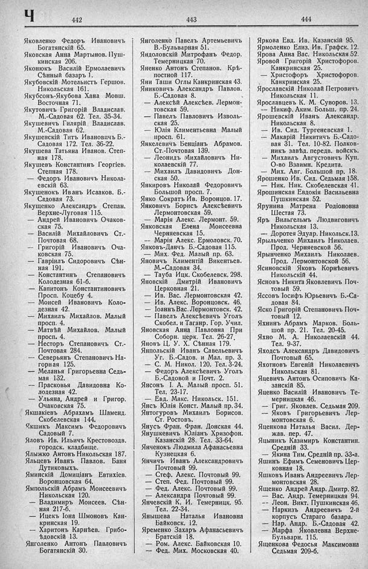

Лист источника 498
Скан

Распознанный текст
Ч 442 443 444
Яковленко Федоръ Ивановичъ
Богатянскій 65.
Яковская Анна Мартынов. Пуш-
кинская 206.
Яконюкъ Василій Ермолаевичъ
Сѣнный базаръ 1.
Якубовскій Мотельистъ Гершов.
Никольская 161.
Якубсонъ-Якубова Хана Мовш.
Восточная 71.
Якутовичъ Григорій Владислав.
М.-Садовая 62. Тел. 35-34.
Якушевичъ Гилярій Владислав.
М.-Садовая 62.
Якушевскій Титъ Ивановичъ Б.-
Садовая 172. Тел. 36-22.
Якушева Татьяна Иванов. Степ-
ная 178.
Якушевъ Константинъ Георгіев.
Степная 178.
— Федоръ Ивановичъ Никола-
евскій 63.
Якушенокъ Иванъ Исааков. Б.-
Садовая 73.
Якущенко Александръ Степан.
Верхне-Луговая 115.
— Андрей Ивановичъ Очаков-
ская 75.
— Василій Михайловичъ Ст.-
Почтовая 68.
— Григорій Ивановичъ Оча-
ковская 75.
— Гавріилъ Сидоровичъ Сѣн-
ная 191.
— Константинъ Степановичъ
Колодезная 61-б.
— Капитонъ Константиновичъ
Просп. Коцебу 4.
— Моисей Ивановичъ Коло-
дезная 42.
— Михаилъ Михайлов. Малый
просп. 4.
— Матвѣй Михайлов. Малый
просп. 4.
— Несторъ Степановичъ Ст.-
Почтовая 284.
— Северьянъ Степановичъ На-
горная 125.
— Меланья Григорьевна Седь-
мая 132.
— Прасковья Давидовна Ко-
лодезная 42.
— Ульяна, Андрей и Григор.
Очаковская 75.
Якшакіевъ Абрахамъ Шаменд.
Скобелевская 144.
Якшикъ Максимъ Федоровичъ
Садовый 7.
Яловъ Ив. Ильичъ Крестовоздв.
городск. кладбище.
Ялыжко Антонъ Никольская 187.
Яльцевъ Иванъ Павлов. Баня
Дутиковыхъ.
Яминскій Домиціанъ Евтихіев.
Воронцовская 64.
Ямпольскій Абрамъ Моисеевичъ
Никольская 120.
— Владимиръ Моисеев. Сѣн-
ная 217-б.
— Ицекъ Іона Шмоновъ Кан-
кринская 19.
— Харитонъ Карпѣев. Грибо-
ѣдовскій 13.
Янголенко Антонъ Павловичъ
Богатянскій 30.
Янголенко Павелъ Артемьевичъ
В.-Бульварная 51.
Яндоловскій Митрофанъ Федор.
Темерницкая 70.
Яненко Антонъ Степанов. Крѣ-
постной 117.
Яни Таши Оглы Канкринская 43.
Яниковичъ Александръ Павлов.
Б.-Садовая 8.
— Алексѣй Алексѣев. Лермон-
товская 59.
— Павелъ Павловичъ Изволь-
ская 25.
— Юлія Климентьевна Малый
просп. 61.
Янкелевичъ Бенціанъ Абрамов.
Ст.-Почтовая 139.
— Леонидъ Михайловичъ Ни-
колаевскій 77.
— Михаилъ Давидовичъ Дон-
ская 50.
Янкировъ Николай Федоровичъ
Большой просп. 7.
Янко Сократъ Ив. Воронцов. 17.
Янковичъ Борисъ Алексѣевичъ
Лермонтовская 59.
— Марія Алекс. Лермонт. 59.
Янковская Елена Моисеевна
Черняевская 15.
— Марія Алекс. Ермоловск. 70.
Янковъ-Данчъ Б.-Садовая 115.
— Мих. Фед. Малый пр. 63.
Яновичъ Климентій Викентьев.
М.-Садовая 34.
— Тауба Ицк. Скобелевск. 298.
Яновскій Дмитрій Ивановичъ
Церковная 21.
— Ив. Вас. Лермонтовская 42.
— Ив. Алекс. Воронцовск. 46.
— Іоаннъ Вас. Лермонтовск. 42.
— Павелъ Алексѣевичъ Уголъ
Скобел. и Таганр. Гор. Учил.
Яновская Анна Павловна При
Соборн. церк. Тел. 26-27.
Яновъ Ц. У. Х. Сѣнная 179.
Янпольскій Иванъ Савельевичъ
Уг. Б.-Садов. и Мал. пр. 3.
— С. М. Никол. 120. Тел. 3-24.
— Федоръ Алексѣевичъ Уголъ
Б.-Садовой и Почт. 2.
Янсонъ І. А. Малый просп. 51.
Тел. 23-17.
— Евд. Макс. Никольск. 151.
Янсъ Юлія Конст. Малый пр. 34.
Янтогуровъ Михаилъ Борисов.
Ст. Ростовъ.
Янусъ Фран. Фран. Донская 44.
Янушкевичъ Юліанъ Хризофон.
Казанскій 28. Тел. 33-64.
Янченокъ Людмила Афанасьевна
Кузнецкая 6.
Янчичъ Иванъ Александровичъ
Почтовый 99.
— Стеф. Алекс. Почтовый 99.
— Степ. Фед. Почтовый 99.
— Фед. Алекс. Почтовый 99.
— Александра Почтовый 99.
Янчевскій К. И. Темерницк. 95.
Тел. 22-34.
Янышева Наталья Ивановна
Байковск. 12.
Яременко Захаръ Афанасьевичъ
Братскій 18.
— Ром. Алекс. Байковская 10.
— Фед. Мих. Московская 40.
Яркова Евд. Ив. Казанскій 95.
Ярмоленко Елиз. Ив. Графск. 12.
Ярова Анна Вас. Никольская 52.
Яровой Григорій Христофоров.
Канкринская 25.
— Христофоръ Христофоров.
Канкринская 25.
Ярославскій Николай Петровичъ
Никольская 11.
Ярославцевъ К. М. Суворов. 13.
— Никиф. Аким. Больш. пр. 24.
Ярошевскій Иванъ Александр.
Никольская 8.
— Ив. Сид. Тургеневская 1.
— Макарій Никитичъ Б.-Садо-
вая 31. Тел. 10-82. Полков-
никъ завѣд. передв. войскъ.
— Михаилъ Августовичъ Куп.
О-во Взаимн. Кредита.
— Мих. Авг. Большой пр. 18.
Ярошенко Ив. Сид. Седьмая 158.
— Ник. Ник. Скобелевская 41.
Ярошинская Евдокія Васильевна
Пушкинская 52.
Ярунина Матрена Родіоновна
Шестая 73.
Яръ Вильгельмъ Людвиговичъ
Никольская 13.
— Доротея Эдуар. Никольск. 13.
Ярыльченко Михаилъ Николаев.
Прод. Черняевской 56.
Ярынченко Михаилъ Николаев.
Прод. Лермонтовской 56.
Ясиновскій Яковъ Корнѣевичъ
Никольскій 44.
Ясновъ Никита Яковлевичъ Поч-
товый 59.
Яссовъ Іосифъ Юрьевичъ Б.-Са-
довая 84.
Яско Григорій Степановичъ Поч-
товый 12.
Яхнинъ Абрамъ Марков. Боль-
шой пр. 21. Тел. 20-45.
Яхно М. А. Николаевскій 44.
Тел. 9-37.
Яходсъ Александръ Давидовичъ
Почтовый 65.
Яхотновъ Евгеній Николаевичъ
Никольская 81.
Яцевичъ Антонъ Осиповичъ Ка-
занскій 85.
Яценко Василій Ивановичъ Те-
мерницкая 46.
— Григ. Яковлев. Седьмая 209.
— Яковъ Григорьевичъ Лер-
монтовская 6.
Яценкова Наталья Васил. Дер-
жав. пер. 47.
Яцыникъ Казимиръ Константин.
Средній 33.
— Якина Тим. Средній пр. 33-а.
Яшинъ Ефимъ Семеновичъ Цер-
ковная 18.
Яшковъ Иванъ Андреевичъ Лер-
монтовская 28.
Ященко Андрей Андр. Дмитр. 82.
— Вас. Андр. Темерницкая 94.
— Леон. Викт. Пушкинская 46.
— Наркизъ Андреевичъ 2-й
корпусъ Стараго базара.
— Нар. Андр. Б.-Садовая 42.
— Марфа Яковлевна Верхне-
Бульварн. 115.
Ященкова Федосья Максимовна
Седьмая 209-б.